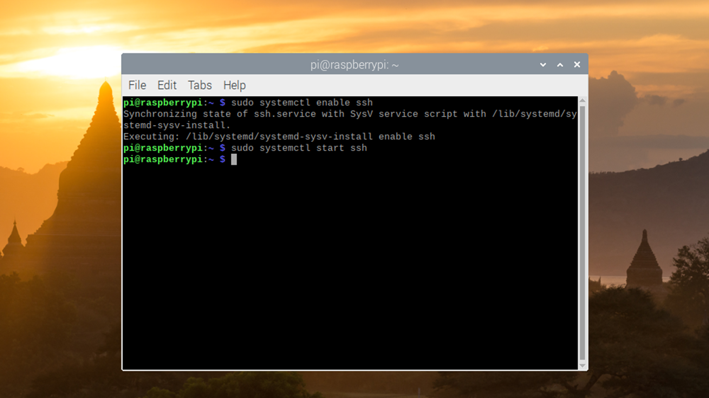

SSH is a tool that allows you to access the Raspberry Pi's terminal from another computer. This page will not show you how to use SSH, but will show you how to enable SSH on the Raspberry Pi.
There are a few ways to go about enabling SSH. In this demonstration, you will need to open the terminal (shown in UI Tour) and run two commands. The first command to run is "sudo systemctl enable ssh". This will allow the Raspberry Pi to use SSH, but will not start using it right away. To start using SSH, you will need to run "sudo systemctl start ssh". You now have enabled SSH!
To access the Raspberry Pi's shell through SSH, you will have to find its IP address. Type in "ip a" to see a list of IP addresses the Raspberry Pi has. In this demonstration, the IPv4 address under "wlan0" is the address that will be used.